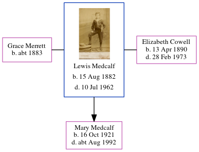

Winifred Alice Boorman (née Dixon) 1917 - 2006
[ Home ] | [ Calendar ] | [ Surnames Index ] | [ Errors ] | [ Family History ]A dairy bookkeeper and the youngest of 3 children of Alfred Dixon (an iron moulder) and Alice Cowell, Winifred Dixon, the fourth cousin once-removed on the mother's side of Nigel Horne, was born in Rochester, Kent, England on 31 May 19171,2,3. She married Henry Boorman (a printing compositor) at St Nicholas in Rochester on 2 Aug 19414.
During her life, she was living at 112 Cecil Road in Rochester on 29 Sept 19391 - less than a mile from her aunt Elizabeth Cowell who was living at 94 Rochester Avenue in Rochester; and at 21 Oakwood Drive, Whitstable, Kent, England c. 20035.
She died on 1 Sept 2006 in Ashford, Kent, England3.
Parents
- Alfred was born on 1 Feb 1883
- Alice Sarah was born on 1 Dec 1883
Citations
- 1939 Register - Findmypast (was recorded at this address)
- England & Wales births 1837-2006 - Findmypast
- England & Wales deaths 1837-2007 - Findmypast
- England & Wales marriages 1837-2008 - Findmypast
- UK, Electoral Registers, 2003-2010
Media
England & Wales births 1837-2006 - BMD/B/1917/3/AZ/000308/020
England & Wales marriages 1837-2008 - BMD/M/1941/3/AZ/000384/057
England & Wales deaths 1837-2007 - BMD/D/2006/9/86966426
1939 Register Transcription - TNA-R39-1772-1772J-023-41
1939 Register Transcription - TNA-R39-1772-1772J-023-40
1939 Register - TNA/R39/1772/1772J/023/42
Family Tree
Map
Generated by ged2site. Last updated on Jul 3, 2024